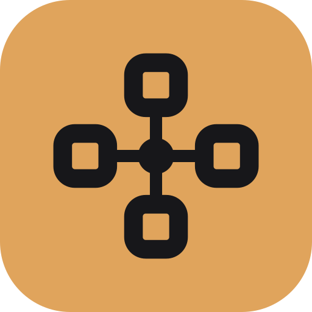

96minfer · brand
Four operator nodes, four edges, one step: the compute graph folded into an app icon.
The mark
48
32
16
mark / dark
mark / light
Four op nodes read one hub — the step itself. The tile is the launcher form; the free mark is the graph without its container, the hub its only colour. The wordmark's i is a node too, so the type carries the same vocabulary.
Lockups
Horizontal lockup only: the tile is set to 1.3× the wordmark size, with a gap of 0.42×. The tinted tile is the only place the amber appears at full strength.
Palette
Ink and paper carry the work; amber is the accent, copper is amber's stand-in on paper (the contrast pair the visualizer's light scheme already uses).
In context
minfer · inference graph×
minfer · shape flow×
Files
minfer-icon.svg· 512 tileminfer-icon-512.png· rasterminfer-icon-256.png· rasterminfer-icon-128.png· rasterminfer-favicon.svg· 32 tileminfer-favicon-32.png· rasterminfer-logo-dark.svg· lockupminfer-logo-light.svg· lockupminfer-mark.svg· currentColorminfer-mark-dark.svg· free markminfer-mark-light.svg· free markminfer-wordmark-dark.svgminfer-wordmark-light.svg